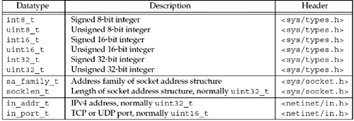
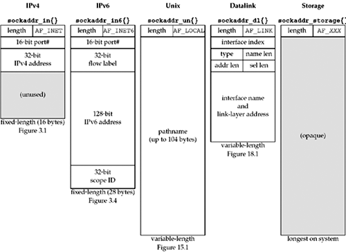

3.2 Socket Address Structures
Most socket functions require a pointer to a socket address structure as an argument. Each supported protocol suite defines its own socket address structure. The names of these structures begin with sockaddr_ and end with a unique suffix for each protocol suite.
IPv4 Socket Address Structure
An IPv4 socket address structure, commonly called an "Internet socket address structure," is named sockaddr_in and is defined by including the <netinet/in.h> header. Figure 3.1 shows the POSIX definition.
Figure 3.1 The Internet (IPv4) socket address structure: sockaddr_in.
struct in_addr {
in_addr_t s_addr; /* 32-bit IPv4 address */
/* network byte ordered */
};
struct sockaddr_in {
uint8_t sin_len; /* length of structure (16) */
sa_family_t sin_family; /* AF_INET */
in_port_t sin_port; /* 16-bit TCP or UDP port number */
/* network byte ordered */
struct in_addr sin_addr; /* 32-bit IPv4 address */
/* network byte ordered */
char sin_zero[8]; /* unused */
};
There are several points we need to make about socket address structures in general using this example:
The length member, sin_len, was added with 4.3BSD-Reno, when support for the OSI protocols was added (Figure 1.15). Before this release, the first member was sin_family, which was historically an unsigned short. Not all vendors support a length field for socket address structures and the POSIX specification does not require this member. The datatype that we show, uint8_t, is typical, and POSIX-compliant systems provide datatypes of this form (Figure 3.2).

Having a length field simplifies the handling of variable-length socket address structures. Even if the length field is present, we need never set it and need never examine it, unless we are dealing with routing sockets (Chapter 18). It is used within the kernel by the routines that deal with socket address structures from various protocol families (e.g., the routing table code). The four socket functions that pass a socket address structure from the process to the kernel, bind, connect, sendto, and sendmsg, all go through the sockargs function in a Berkeley-derived implementation (p. 452 of TCPv2). This function copies the socket address structure from the process and explicitly sets its sin_len member to the size of the structure that was passed as an argument to these four functions. The five socket functions that pass a socket address structure from the kernel to the process, accept, recvfrom, recvmsg, getpeername, and getsockname, all set the sin_len member before returning to the process. Unfortunately, there is normally no simple compile-time test to determine whether an implementation defines a length field for its socket address structures. In our code, we test our own HAVE_SOCKADDR_SA_LEN constant (Figure D.2), but whether to define this constant or not requires trying to compile a simple test program that uses this optional structure member and seeing if the compilation succeeds or not. We will see in Figure 3.4 that IPv6 implementations are required to define SIN6_LEN if socket address structures have a length field. Some IPv4 implementations provide the length field of the socket address structure to the application based on a compile-time option (e.g., _SOCKADDR_LEN). This feature provides compatibility for older programs.
The POSIX specification requires only three members in the structure: sin_family, sin_addr, and sin_port. It is acceptable for a POSIX-compliant implementation to define additional structure members, and this is normal for an Internet socket address structure. Almost all implementations add the sin_zero member so that all socket address structures are at least 16 bytes in size. We show the POSIX datatypes for the s_addr, sin_family, and sin_port members. The in_addr_t datatype must be an unsigned integer type of at least 32 bits, in_port_t must be an unsigned integer type of at least 16 bits, and sa_family_t can be any unsigned integer type. The latter is normally an 8-bit unsigned integer if the implementation supports the length field, or an unsigned 16-bit integer if the length field is not supported. Figure 3.2 lists these three POSIX-defined datatypes, along with some other POSIX datatypes that we will encounter.
You will also encounter the datatypes u_char, u_short, u_int, and u_long, which are all unsigned. The POSIX specification defines these with a note that they are obsolete. They are provided for backward compatibility. Both the IPv4 address and the TCP or UDP port number are always stored in the structure in network byte order. We must be cognizant of this when using these members. We will say more about the difference between host byte order and network byte order in Section 3.4. The 32-bit IPv4 address can be accessed in two different ways. For example, if serv is defined as an Internet socket address structure, then serv.sin_addr references the 32-bit IPv4 address as an in_addr structure, while serv.sin_addr.s_addr references the same 32-bit IPv4 address as an in_addr_t (typically an unsigned 32-bit integer). We must be certain that we are referencing the IPv4 address correctly, especially when it is used as an argument to a function, because compilers often pass structures differently from integers. The reason the sin_addr member is a structure, and not just an in_addr_t, is historical. Earlier releases (4.2BSD) defined the in_addr structure as a union of various structures, to allow access to each of the 4 bytes and to both of the 16-bit values contained within the 32-bit IPv4 address. This was used with class A, B, and C addresses to fetch the appropriate bytes of the address. But with the advent of subnetting and then the disappearance of the various address classes with classless addressing (Section A.4), the need for the union disappeared. Most systems today have done away with the union and just define in_addr as a structure with a single in_addr_t member.
The sin_zero member is unused, but we always set it to 0 when filling in one of these structures. By convention, we always set the entire structure to 0 before filling it in, not just the sin_zero member. Although most uses of the structure do not require that this member be 0, when binding a non-wildcard IPv4 address, this member must be 0 (pp. 731–732 of TCPv2).
Socket address structures are used only on a given host: The structure itself is not communicated between different hosts, although certain fields (e.g., the IP address and port) are used for communication.
Generic Socket Address Structure
A socket address structures is always passed by reference when passed as an argument to any socket functions. But any socket function that takes one of these pointers as an argument must deal with socket address structures from any of the supported protocol families.
A problem arises in how to declare the type of pointer that is passed. With ANSI C, the solution is simple: void * is the generic pointer type. But, the socket functions predate ANSI C and the solution chosen in 1982 was to define a generic socket address structure in the <sys/socket.h> header, which we show in Figure 3.3.
Figure 3.3 The generic socket address structure: sockaddr.
struct sockaddr {
uint8_t sa_len;
sa_family_t sa_family; /* address family: AF_xxx value */
char sa_data[14]; /* protocol-specific address */
};
The socket functions are then defined as taking a pointer to the generic socket address structure, as shown here in the ANSI C function prototype for the bind function:
int bind(int, struct sockaddr *, socklen_t);
This requires that any calls to these functions must cast the pointer to the protocol-specific socket address structure to be a pointer to a generic socket address structure. For example,
struct sockaddr_in serv; /* IPv4 socket address structure */
/* fill in serv{} */
bind(sockfd, (struct sockaddr *) &serv, sizeof(serv));
If we omit the cast "(struct sockaddr *)," the C compiler generates a warning of the form "warning: passing arg 2 of 'bind' from incompatible pointer type," assuming the system's headers have an ANSI C prototype for the bind function.
From an application programmer's point of view, the only use of these generic socket address structures is to cast pointers to protocol-specific structures.
Recall in Section 1.2 that in our unp.h header, we define SA to be the string "struct sockaddr" just to shorten the code that we must write to cast these pointers.
From the kernel's perspective, another reason for using pointers to generic socket address structures as arguments is that the kernel must take the caller's pointer, cast it to a struct sockaddr *, and then look at the value of sa_family to determine the type of the structure. But from an application programmer's perspective, it would be simpler if the pointer type was void *, omitting the need for the explicit cast.
IPv6 Socket Address Structure
The IPv6 socket address is defined by including the <netinet/in.h> header, and we show it in Figure 3.4.
Figure 3.4 IPv6 socket address structure: sockaddr_in6.
struct in6_addr {
uint8_t s6_addr[16]; /* 128-bit IPv6 address */
/* network byte ordered */
};
#define SIN6_LEN /* required for compile-time tests */
struct sockaddr_in6 {
uint8_t sin6_len; /* length of this struct (28) */
sa_family_t sin6_family; /* AF_INET6 */
in_port_t sin6_port; /* transport layer port# */
/* network byte ordered */
uint32_t sin6_flowinfo; /* flow information, undefined */
struct in6_addr sin6_addr; /* IPv6 address */
/* network byte ordered */
uint32_t sin6_scope_id; /* set of interfaces for a scope */
};
The extensions to the sockets API for IPv6 are defined in RFC 3493 [Gilligan et al. 2003].
Note the following points about Figure 3.4:
The SIN6_LEN constant must be defined if the system supports the length member for socket address structures. The IPv6 family is AF_INET6, whereas the IPv4 family is AF_INET. The members in this structure are ordered so that if the sockaddr_in6 structure is 64-bit aligned, so is the 128-bit sin6_addr member. On some 64-bit processors, data accesses of 64-bit values are optimized if stored on a 64-bit boundary. The sin6_flowinfo member is divided into two fields: The flow label field is described with Figure A.2. The use of the flow label field is still a research topic. The sin6_scope_id identifies the scope zone in which a scoped address is meaningful, most commonly an interface index for a link-local address (Section A.5).
New Generic Socket Address Structure
A new generic socket address structure was defined as part of the IPv6 sockets API, to overcome some of the shortcomings of the existing struct sockaddr. Unlike the struct sockaddr, the new struct sockaddr_storage is large enough to hold any socket address type supported by the system. The sockaddr_storage structure is defined by including the <netinet/in.h> header, which we show in Figure 3.5.
Figure 3.5 The storage socket address structure: sockaddr_storage.
struct sockaddr_storage {
uint8_t ss_len; /* length of this struct (implementation dependent) */
sa_family_t ss_family; /* address family: AF_xxx value */
/* implementation-dependent elements to provide:
* a) alignment sufficient to fulfill the alignment requirements of
* all socket address types that the system supports.
* b) enough storage to hold any type of socket address that the
* system supports.
*/
};
The sockaddr_storage type provides a generic socket address structure that is different from struct sockaddr in two ways:
If any socket address structures that the system supports have alignment requirements, the sockaddr_storage provides the strictest alignment requirement. The sockaddr_storage is large enough to contain any socket address structure that the system supports.
Note that the fields of the sockaddr_storage structure are opaque to the user, except for ss_family and ss_len (if present). The sockaddr_storage must be cast or copied to the appropriate socket address structure for the address given in ss_family to access any other fields.
Comparison of Socket Address Structures
Figure 3.6 shows a comparison of the five socket address structures that we will encounter in this text: IPv4, IPv6, Unix domain (Figure 15.1), datalink (Figure 18.1), and storage. In this figure, we assume that the socket address structures all contain a one-byte length field, that the family field also occupies one byte, and that any field that must be at least some number of bits is exactly that number of bits.

Two of the socket address structures are fixed-length, while the Unix domain structure and the datalink structure are variable-length. To handle variable-length structures, whenever we pass a pointer to a socket address structure as an argument to one of the socket functions, we pass its length as another argument. We show the size in bytes (for the 4.4BSD implementation) of the fixed-length structures beneath each structure.
The sockaddr_un structure itself is not variable-length (Figure 15.1), but the amount of information—the pathname within the structure—is variable-length. When passing pointers to these structures, we must be careful how we handle the length field, both the length field in the socket address structure itself (if supported by the implementation) and the length to and from the kernel. This figure shows the style that we follow throughout the text: structure names are always shown in a bolder font, followed by braces, as in sockaddr_in{}. We noted earlier that the length field was added to all the socket address structures with the 4.3BSD Reno release. Had the length field been present with the original release of sockets, there would be no need for the length argument to all the socket functions: the third argument to bind and connect, for example. Instead, the size of the structure could be contained in the length field of the structure.
 |